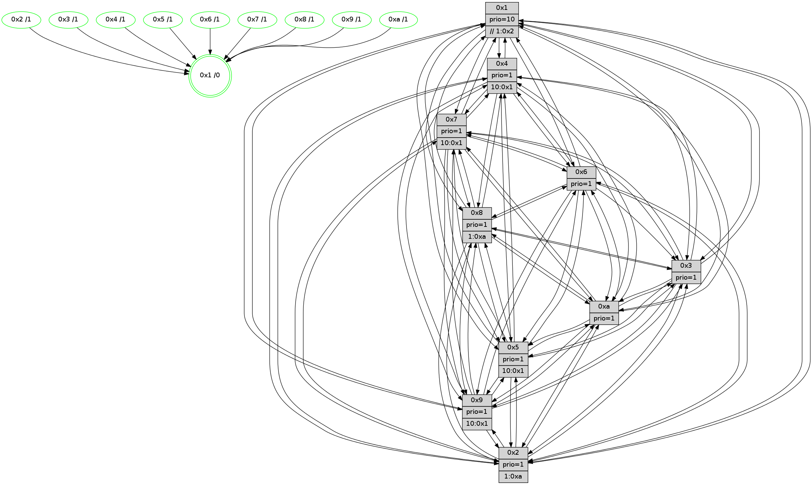

>> << IDX [start] -100 -25 -5 +0 +5 +25 +100 [1260.65001297]
 Previous packets
----------------------------------------------------------------------
1255.133091 beacon01(faad) #0 coord=01,02,03,04,05,06,07,0a,09,08 cycle=688.0ms assoc
-- color-indic=1 64 a1 32
1255.143073 beacon02(faad) #0 coord=01,02,03,04,05,06,07,0a,09,08 cycle=688.0ms assoc 64 32 03
1255.153074 beacon03(faad) #0 coord=01,02,03,04,05,06,07,0a,09,08 cycle=688.0ms assoc 64 48 4e
1255.163074 beacon04(faad) #0 coord=01,02,03,04,05,06,07,0a,09,08 cycle=688.0ms assoc 64 3f a4
1255.173073 beacon05(faad) #0 coord=01,02,03,04,05,06,07,0a,09,08 cycle=688.0ms assoc 64 45 e9
1255.183075 beacon06(faad) #0 coord=01,02,03,04,05,06,07,0a,09,08 cycle=688.0ms assoc 64 cb 3e
1255.193075 beacon07(faad) #0 coord=01,02,03,04,05,06,07,0a,09,08 cycle=688.0ms assoc 64 b1 73
1255.203079 beacon0a(faad) #0 coord=01,02,03,04,05,06,07,0a,09,08 cycle=688.0ms assoc 64 c0 78
1255.213080 beacon09(faad) #0 coord=01,02,03,04,05,06,07,0a,09,08 cycle=688.0ms assoc 64 4e af
1255.223080 beacon08(faad) #0 coord=01,02,03,04,05,06,07,0a,09,08 cycle=688.0ms assoc 64 34 e2
1255.234700 [STC(8)->1 #0.203 tree-change,inconsistent-stability,stable,to-color d=1]
1255.236095 [STC(4)->1 #0.203 tree-change,inconsistent-stability,stable,to-color d=1]
1255.237710 [STC(7)->1 #0.203 tree-change,inconsistent-stability,stable,to-color d=1]
1255.239486 [STC(10)->1 #0.203 tree-change,inconsistent-stability,stable,to-color d=1]
1255.240927 [Hello(3): seq=801 sym=1,7,2,4,8,9,10,5 sysInfo=hasWarning stat=1:6,6,13,0/7:15,8,7,12/2:8,4,7,0/4:11,5,9,11/8:6,7,3,4/9:14,11,12,0/10:0,6,1,4/5:7,2,15,0]
1255.243218 [Hello(5): seq=801 sym=7,6,4,3,1,9,8,10,2 sysInfo=hasWarning stat=7:11,11,2,14/6:11,7,13,3/4:10,5,8,13/3:0,0,10,0/1:2,15,11,0/9:13,2,7,10/8:7,14,6,3/10:7,3,6,8/2:12,4,10,7]
1255.246014 [Hello(6): seq=801 sym=2,3,5,4,7,9,8,10,1 sysInfo=hasWarning stat=2:11,3,5,0/3:0,1,0,0/5:11,4,8,3/4:2,14,5,6/7:14,8,0,13/9:2,2,14,10/8:14,15,10,5/10:8,5,10,12/1:5,3,13,1]
1255.248630 [STC(3)->1 #0.203 tree-change,inconsistent-stability,stable,to-color d=1]
1255.254582 [Color(6) seq=433 @0:0 prio=1]
1255.255994 [Hello(1): seq=710 sym=4,2,9,5,10,3,8,6,7 sysInfo=coloring-mode-on,ColoringModeRequestCalled stat=4:5,15,5,1/2:10,2,13,3/9:9,4,4,1/5:9,11,7,8/10:1,9,3,7/3:0,7,13,9/8:15,5,4,1/6:12,8,1,15/7:0,6,10,15]
1255.261813 [Color(10) seq=390 @0:0 prio=1]
1255.263615 [STC(2)->1 #0.203 tree-change,inconsistent-stability,stable,to-color d=1]
1255.265899 [Color(3) seq=430 @0:0 prio=1]
1255.270822 [Color(2) seq=377 @0:0 prio=1 >1.@a]
1255.273937 [Color(9) seq=360 @0:0 prio=1]
----------------------------------------------------------------------
1255.921221 beacon01(faad) #0 coord=01,02,03,04,05,06,07,0a,09,08 cycle=688.0ms assoc
-- color-indic=1 64 1d 37
1255.931204 beacon02(faad) #0 coord=01,02,03,04,05,06,07,0a,09,08 cycle=688.0ms assoc 64 8e 06
1255.941203 beacon03(faad) #0 coord=01,02,03,04,05,06,07,0a,09,08 cycle=688.0ms assoc 64 f4 4b
1255.951203 beacon04(faad) #0 coord=01,02,03,04,05,06,07,0a,09,08 cycle=688.0ms assoc 64 83 a1
1255.961205 beacon05(faad) #0 coord=01,02,03,04,05,06,07,0a,09,08 cycle=688.0ms assoc 64 f9 ec
1255.971205 beacon06(faad) #0 coord=01,02,03,04,05,06,07,0a,09,08 cycle=688.0ms assoc 64 77 3b
1255.981204 beacon07(faad) #0 coord=01,02,03,04,05,06,07,0a,09,08 cycle=688.0ms assoc 64 0d 76
1255.991209 beacon0a(faad) #0 coord=01,02,03,04,05,06,07,0a,09,08 cycle=688.0ms assoc 64 7c 7d
1256.001210 beacon09(faad) #0 coord=01,02,03,04,05,06,07,0a,09,08 cycle=688.0ms assoc 64 f2 aa
1256.011210 beacon08(faad) #0 coord=01,02,03,04,05,06,07,0a,09,08 cycle=688.0ms assoc 64 88 e7
1256.024664 [Hello(10): seq=734 sym=6,2,3,8,7,5,9,4,1 sysInfo=hasWarning stat=6:13,6,6,2/2:14,1,9,11/3:14,14,12,13/8:14,6,4,2/7:1,11,14,7/5:13,12,3,0/9:5,3,13,4/4:1,10,13,0/1:8,4,8,1]
1256.027693 [Color(5) seq=364 @0:0 prio=1]
1256.028982 [Hello(7): seq=801 sym=2,3,5,6,8,9,10,1 sysInfo=hasWarning stat=2:11,4,3,2/3:1,10,4,2/5:14,2,15,2/6:3,1,4,10/8:13,4,3,0/9:6,6,1,1/10:1,14,3,6/1:11,2,11,0]
1256.031672 [Hello(4): seq=801 sym=5,7,6,2,3,9,8,10,1 sysInfo= stat=5:5,12,9,1/7:2,0,14,2/6:6,10,14,13/2:13,14,5,15/3:3,3,15,14/9:10,7,4,1/8:13,5,6,1/10:1,13,4,14/1:3,7,13,1]
1256.035330 [Color(1) seq=482 @0:0 prio=10 >>1.@6,1.@7,1.@8]
1256.038326 [Color(7) seq=329 @0:0 prio=1]
1256.040394 [Color(4) seq=340 @0:0 prio=1 >10.@1,1.@2,1.@3,1.@5]
1256.049994 [Hello(8): seq=745 sym=5,2,3,7,9,6,4,10,1 sysInfo=hasWarning stat=5:10,7,11,0/2:7,11,11,11/3:13,13,15,2/7:14,9,5,0/9:7,14,13,4/6:14,13,15,14/4:12,1,2,0/10:1,2,0,4/1:8,12,13,0]
1256.055049 [Color(8) seq=400 @0:0 prio=1 >1.@a]
----------------------------------------------------------------------
1256.709359 beacon01(faad) #0 coord=01,02,03,04,05,06,07,0a,09,08 cycle=688.0ms assoc
-- color-indic=1 64 29 2f
1256.719343 beacon02(faad) #0 coord=01,02,03,04,05,06,07,0a,09,08 cycle=688.0ms assoc 64 ba 1e
1256.729341 beacon03(faad) #0 coord=01,02,03,04,05,06,07,0a,09,08 cycle=688.0ms assoc 64 c0 53
1256.739341 beacon04(faad) #0 coord=01,02,03,04,05,06,07,0a,09,08 cycle=688.0ms assoc 64 b7 b9
1256.749343 beacon05(faad) #0 coord=01,02,03,04,05,06,07,0a,09,08 cycle=688.0ms assoc 64 cd f4
1256.759342 beacon06(faad) #0 coord=01,02,03,04,05,06,07,0a,09,08 cycle=688.0ms assoc 64 43 23
1256.769341 beacon07(faad) #0 coord=01,02,03,04,05,06,07,0a,09,08 cycle=688.0ms assoc 64 39 6e
1256.779348 beacon0a(faad) #0 coord=01,02,03,04,05,06,07,0a,09,08 cycle=688.0ms assoc 64 48 65
1256.789347 beacon09(faad) #0 coord=01,02,03,04,05,06,07,0a,09,08 cycle=688.0ms assoc 64 c6 b2
1256.799347 beacon08(faad) #0 coord=01,02,03,04,05,06,07,0a,09,08 cycle=688.0ms assoc 64 bc ff
1256.810277 [Hello(1): seq=711 sym=4,2,9,5,10,3,8,6,7 sysInfo=coloring-mode-on,ColoringModeRequestCalled stat=4:5,0,5,1/2:10,3,14,3/9:9,5,4,1/5:9,11,7,8/10:2,10,3,7/3:0,8,13,9/8:0,6,4,1/6:12,8,1,15/7:0,7,10,15]
1256.814193 [Hello(5): seq=802 sym=7,6,4,3,1,9,8,10,2 sysInfo=hasWarning stat=7:12,12,2,14/6:12,8,14,3/4:11,6,8,13/3:0,1,11,0/1:3,0,11,0/9:13,3,7,10/8:8,15,6,3/10:7,4,6,8/2:12,5,11,7]
1256.816918 [Hello(2): seq=798 sym=4,5,7,6,3,9,8,10,1 sysInfo=hasWarning stat=4:5,12,2,11/5:9,12,3,2/7:0,7,3,15/6:0,1,0,0/3:14,5,2,11/9:6,15,10,9/8:1,9,0,11/10:9,4,8,10/1:6,7,7,0]
1256.821282 [Color(9) seq=361 @0:0 prio=1 >10.@1,1.@2,1.@3,1.@4]
1256.823125 [Hello(6): seq=802 sym=3,5,4,7,9,8,10,1 sysInfo=hasWarning stat=3:0,2,0,0/5:11,5,8,3/4:3,15,6,6/7:15,9,1,13/9:2,3,14,10/8:15,0,11,5/10:9,6,10,12/1:6,4,13,1]
1256.826291 [Color(2) seq=378 @0:0 prio=1 >1.@a]
1256.828015 [Color(6) seq=434 @0:0 prio=1]
1256.831134 [Color(10) seq=391 @0:0 prio=1]
1256.832542 [Hello(3): seq=802 sym=1,7,2,4,8,9,10,5 sysInfo=hasWarning stat=1:6,7,13,0/7:0,9,8,12/2:8,5,7,0/4:12,6,10,11/8:7,8,4,4/9:14,12,12,0/10:1,6,1,4/5:8,3,15,0]
1256.835854 [Color(3) seq=431 @0:0 prio=1]
----------------------------------------------------------------------
1257.497488 beacon01(faad) #0 coord=01,02,03,04,05,06,07,0a,09,08 cycle=688.0ms assoc
-- color-indic=1 64 95 2a
1257.507471 beacon02(faad) #0 coord=01,02,03,04,05,06,07,0a,09,08 cycle=688.0ms assoc 64 06 1b
1257.517471 beacon03(faad) #0 coord=01,02,03,04,05,06,07,0a,09,08 cycle=688.0ms assoc 64 7c 56
1257.527471 beacon04(faad) #0 coord=01,02,03,04,05,06,07,0a,09,08 cycle=688.0ms assoc 64 0b bc
1257.537470 beacon05(faad) #0 coord=01,02,03,04,05,06,07,0a,09,08 cycle=688.0ms assoc 64 71 f1
1257.547470 beacon06(faad) #0 coord=01,02,03,04,05,06,07,0a,09,08 cycle=688.0ms assoc 64 ff 26
1257.557473 beacon07(faad) #0 coord=01,02,03,04,05,06,07,0a,09,08 cycle=688.0ms assoc 64 85 6b
1257.567475 beacon0a(faad) #0 coord=01,02,03,04,05,06,07,0a,09,08 cycle=688.0ms assoc 64 f4 60
1257.577475 beacon09(faad) #0 coord=01,02,03,04,05,06,07,0a,09,08 cycle=688.0ms assoc 64 7a b7
1257.587476 beacon08(faad) #0 coord=01,02,03,04,05,06,07,0a,09,08 cycle=688.0ms assoc 64 00 fa
1257.598702 [Hello(10): seq=735 sym=6,2,3,8,7,5,9,4,1 sysInfo=hasWarning stat=6:13,6,6,2/2:14,1,9,11/3:15,15,12,13/8:15,7,4,2/7:2,12,14,7/5:13,13,3,0/9:5,3,13,4/4:2,11,13,0/1:9,5,8,1]
1257.601398 PARSE ERROR************************
Traceback (most recent call last):
File "PacketAnalysis.py", line 167, in showOperaPacket
structPacket = OperaPacketParse.parsePacket(rawPacket)
File "../../pkg-python/HipSens/Core/OperaPacketParse.py", line 461, in parsePacket
return parseHelloMessage(data)
File "../../pkg-python/HipSens/Core/OperaPacketParse.py", line 125, in parseHelloMessage
struct.unpack("!H",linkList[:2])[0])
error: unpack requires a string argument of length 2
48 34 09 00 02 ea 00 02 02 12 02 00 05 00 03 00 04 00 07 00 06 00 08 00 0a 00 01 00 53 04 00 02 00 00 4c 12 95 dd 77 65 2d 5e 07 13 2b 87 c3 48 49 81 4b 9e 1f d7 4d af
1257.603935 [Color(5) seq=365 @0:0 prio=1 >10.@1,1.@2,1.@3,1.@4]
1257.605721 [Hello(7): seq=802 sym=2,3,5,6,8,9,10,1 sysInfo=hasWarning stat=2:12,5,3,2/3:2,11,4,2/5:15,2,15,2/6:4,2,4,10/8:14,5,3,0/9:6,7,1,1/10:2,15,3,6/1:12,2,11,0]
1257.609040 [Color(7) seq=330 @0:0 prio=1 >10.@1,1.@2,1.@3,1.@4]
1257.611057 [Hello(8): seq=746 sym=5,2,3,7,9,6,4,10,1 sysInfo=hasWarning stat=5:11,7,11,0/2:8,12,11,11/3:14,14,15,2/7:14,9,5,0/9:8,15,13,4/6:15,14,15,14/4:12,1,2,0/10:1,3,0,4/1:9,12,13,0]
1257.613797 [Color(1) seq=483 @0:0 prio=10 >>1.@2,1.@3,1.@4]
1257.616588 [Color(8) seq=401 @0:0 prio=1 >1.@a]
1257.623078 [Hello(4): seq=802 sym=5,7,6,2,3,9,8,10,1 sysInfo= stat=5:6,12,9,1/7:2,0,14,2/6:7,11,14,13/2:14,15,5,15/3:4,4,15,14/9:11,8,4,1/8:14,6,6,1/10:1,14,4,14/1:4,7,13,1]
1257.626849 [Color(4) seq=341 @0:0 prio=1 >10.@1,1.@2,1.@3,1.@5]
----------------------------------------------------------------------
1258.285618 beacon01(faad) #0 coord=01,02,03,04,05,06,07,0a,09,08 cycle=688.0ms assoc
-- color-indic=1 64 51 24
1258.295600 beacon02(faad) #0 coord=01,02,03,04,05,06,07,0a,09,08 cycle=688.0ms assoc 64 c2 15
1258.305603 beacon03(faad) #0 coord=01,02,03,04,05,06,07,0a,09,08 cycle=688.0ms assoc 64 b8 58
1258.315600 beacon04(faad) #0 coord=01,02,03,04,05,06,07,0a,09,08 cycle=688.0ms assoc 64 cf b2
1258.325600 beacon05(faad) #0 coord=01,02,03,04,05,06,07,0a,09,08 cycle=688.0ms assoc 64 b5 ff
1258.335603 beacon06(faad) #0 coord=01,02,03,04,05,06,07,0a,09,08 cycle=688.0ms assoc 64 3b 28
1258.345602 beacon07(faad) #0 coord=01,02,03,04,05,06,07,0a,09,08 cycle=688.0ms assoc 64 41 65
1258.355606 beacon0a(faad) #0 coord=01,02,03,04,05,06,07,0a,09,08 cycle=688.0ms assoc 64 30 6e
1258.365606 beacon09(faad) #0 coord=01,02,03,04,05,06,07,0a,09,08 cycle=688.0ms assoc 64 be b9
1258.375606 beacon08(faad) #0 coord=01,02,03,04,05,06,07,0a,09,08 cycle=688.0ms assoc 64 c4 f4
1258.386820 [Hello(5): seq=803 sym=7,6,4,3,1,9,8,10,2 sysInfo=hasWarning stat=7:13,13,2,14/6:13,9,14,3/4:12,7,8,13/3:1,2,11,0/1:3,1,11,0/9:13,4,7,10/8:9,0,6,3/10:8,5,6,8/2:13,6,11,7]
1258.390152 [Hello(1): seq=712 sym=4,2,9,5,10,3,8,6,7 sysInfo=coloring-mode-on,ColoringModeRequestCalled stat=4:6,1,5,1/2:11,4,14,3/9:10,6,4,1/5:10,11,7,8/10:3,11,3,7/3:1,9,13,9/8:0,7,4,1/6:13,9,1,15/7:0,7,10,15]
1258.392877 [Hello(6): seq=803 sym=3,5,4,7,9,8,10,1 sysInfo=hasWarning stat=3:1,3,0,0/5:12,6,8,3/4:4,0,6,6/7:0,10,1,13/9:3,3,14,10/8:0,1,11,5/10:10,7,10,12/1:7,5,13,1]
1258.395149 [Color(9) seq=362 @0:0 prio=1 >10.@1,1.@2,1.@3,1.@4]
1258.397965 [Color(6) seq=435 @0:0 prio=1]
1258.399221 [Hello(3): seq=803 sym=1,7,2,4,8,9,10,5 sysInfo=hasWarning stat=1:7,8,13,0/7:1,10,8,12/2:8,5,7,0/4:13,7,10,11/8:8,9,4,4/9:15,12,12,0/10:2,6,1,4/5:9,4,15,0]
1258.402221 [Color(3) seq=432 @0:0 prio=1]
1258.405711 [STC(1) #0.204 tree-change,inconsistent-stability,stable,to-color d=0]
1258.411011 [Color(10) seq=392 @0:0 prio=1]
1258.415038 [Hello(2): seq=799 sym=4,5,7,6,3,9,8,10,1 sysInfo=hasWarning stat=4:6,13,2,11/5:10,13,3,2/7:1,8,3,15/6:0,2,0,0/3:15,6,2,11/9:7,15,10,9/8:2,10,0,11/10:10,5,8,10/1:7,8,7,0]
1258.419125 [Color(2) seq=379 @0:0 prio=1 >1.@a]
----------------------------------------------------------------------
1259.073750 beacon01(faad) #0 coord=01,02,03,04,05,06,07,0a,09,08 cycle=688.0ms assoc
-- color-indic=1 64 ed 21
1259.083733 beacon02(faad) #0 coord=01,02,03,04,05,06,07,0a,09,08 cycle=688.0ms assoc 64 7e 10
1259.093732 beacon03(faad) #0 coord=01,02,03,04,05,06,07,0a,09,08 cycle=688.0ms assoc 64 04 5d
1259.103733 beacon04(faad) #0 coord=01,02,03,04,05,06,07,0a,09,08 cycle=688.0ms assoc 64 73 b7
1259.113733 beacon05(faad) #0 coord=01,02,03,04,05,06,07,0a,09,08 cycle=688.0ms assoc 64 09 fa
1259.123732 beacon06(faad) #0 coord=01,02,03,04,05,06,07,0a,09,08 cycle=688.0ms assoc 64 87 2d
1259.133734 beacon07(faad) #0 coord=01,02,03,04,05,06,07,0a,09,08 cycle=688.0ms assoc 64 fd 60
1259.143739 beacon0a(faad) #0 coord=01,02,03,04,05,06,07,0a,09,08 cycle=688.0ms assoc 64 8c 6b
1259.153738 beacon09(faad) #0 coord=01,02,03,04,05,06,07,0a,09,08 cycle=688.0ms assoc 64 02 bc
1259.163738 beacon08(faad) #0 coord=01,02,03,04,05,06,07,0a,09,08 cycle=688.0ms assoc 64 78 f1
1259.175221 [Hello(9): seq=747 sym=2,5,3,4,7,6,8,10,1 sysInfo=hasWarning stat=2:14,14,5,9/5:6,7,7,7/3:15,6,13,2/4:4,2,7,0/7:8,9,11,2/6:8,5,3,12/8:2,9,9,4/10:14,10,11,4/1:7,14,0,1]
1259.178764 [Hello(7): seq=803 sym=2,3,5,6,4,8,9,10,1 sysInfo=hasWarning stat=2:13,6,3,2/3:3,12,4,2/5:0,2,15,2/6:5,3,4,10/4:0,1,0,0/8:15,6,3,0/9:7,7,1,1/10:3,0,3,6/1:13,3,12,0]
1259.181492 [Hello(8): seq=747 sym=5,2,3,7,9,6,4,10,1 sysInfo=hasWarning stat=5:12,7,11,0/2:9,13,11,11/3:15,15,15,2/7:14,9,5,0/9:9,15,13,4/6:0,15,15,14/4:13,2,2,0/10:2,4,0,4/1:10,12,14,0]
1259.185253 [STC(7)->1 #0.204 tree-change,inconsistent-stability,stable,to-color d=1]
1259.187282 [STC(6)->1 #0.204 tree-change,inconsistent-stability,stable,to-color d=1]
1259.189046 [Color(1) seq=484 @0:0 prio=10 >>1.@2,1.@3,1.@4]
1259.191201 [Color(7) seq=331 @0:0 prio=1 >10.@1,1.@2,1.@3,1.@4]
1259.193890 [Hello(4): seq=803 sym=5,7,6,2,3,9,8,10,1 sysInfo= stat=5:7,12,9,1/7:2,0,14,2/6:8,12,14,13/2:15,0,5,15/3:5,5,15,14/9:12,8,4,1/8:14,6,6,1/10:2,15,4,14/1:5,7,14,1]
1259.196518 [STC(9)->1 #0.204 tree-change,inconsistent-stability,stable,to-color d=1]
1259.198650 [STC(4)->1 #0.204 tree-change,inconsistent-stability,stable,to-color d=1]
1259.200121 [Color(8) seq=402 @0:0 prio=1 >1.@a]
1259.201497 [STC(3)->1 #0.204 tree-change,inconsistent-stability,stable,to-color d=1]
1259.203014 [Hello(10): seq=736 sym=6,2,3,8,7,5,9,4,1 sysInfo=hasWarning stat=6:13,6,6,2/2:15,2,9,11/3:15,15,12,13/8:0,8,4,2/7:3,13,14,7/5:14,14,3,0/9:6,3,13,4/4:3,12,13,0/1:10,6,8,1]
1259.206000 [Color(4) seq=342 @0:0 prio=1 >10.@1,1.@2,1.@3,1.@5]
1259.209184 [STC(5)->1 #0.204 tree-change,inconsistent-stability,stable,to-color d=1]
1259.211136 [Color(5) seq=366 @0:0 prio=1 >10.@1,1.@2,1.@3,1.@4]
----------------------------------------------------------------------
1259.861882 beacon01(faad) #0 coord=01,02,03,04,05,06,07,0a,09,08 cycle=688.0ms assoc
-- color-indic=1 64 f9 4f
1259.871864 beacon02(faad) #0 coord=01,02,03,04,05,06,07,0a,09,08 cycle=688.0ms assoc 64 6a 7e
1259.881865 beacon03(faad) #0 coord=01,02,03,04,05,06,07,0a,09,08 cycle=688.0ms assoc 64 10 33
1259.891866 beacon04(faad) #0 coord=01,02,03,04,05,06,07,0a,09,08 cycle=688.0ms assoc 64 67 d9
1259.901865 beacon05(faad) #0 coord=01,02,03,04,05,06,07,0a,09,08 cycle=688.0ms assoc 64 1d 94
1259.911864 beacon06(faad) #0 coord=01,02,03,04,05,06,07,0a,09,08 cycle=688.0ms assoc 64 93 43
1259.921866 beacon07(faad) #0 coord=01,02,03,04,05,06,07,0a,09,08 cycle=688.0ms assoc 64 e9 0e
1259.931871 beacon0a(faad) #0 coord=01,02,03,04,05,06,07,0a,09,08 cycle=688.0ms assoc 64 98 05
1259.941870 beacon09(faad) #0 coord=01,02,03,04,05,06,07,0a,09,08 cycle=688.0ms assoc 64 16 d2
1259.951872 beacon08(faad) #0 coord=01,02,03,04,05,06,07,0a,09,08 cycle=688.0ms assoc 64 6c 9f
1259.963459 [Hello(1): seq=713 sym=4,2,9,5,10,3,8,6,7 sysInfo=coloring-mode-on,ColoringModeRequestCalled stat=4:7,2,6,1/2:12,5,14,3/9:11,6,5,1/5:10,12,8,8/10:4,12,3,7/3:1,9,14,9/8:0,8,4,1/6:13,9,1,15/7:0,8,10,15]
1259.966879 [Hello(5): seq=804 sym=7,6,4,3,1,9,8,10,2 sysInfo=hasWarning stat=7:13,13,2,14/6:14,10,14,3/4:12,7,8,13/3:2,3,11,0/1:4,1,12,0/9:14,4,7,10/8:9,0,6,3/10:8,6,6,8/2:14,7,11,7]
1259.969382 [Hello(3): seq=804 sym=1,7,2,4,8,9,10,5 sysInfo=hasWarning stat=1:8,8,14,0/7:1,10,8,12/2:9,6,7,0/4:13,8,10,11/8:8,9,4,4/9:15,12,12,0/10:3,7,1,4/5:10,5,0,0]
1259.971699 [Color(10) seq=393 @0:0 prio=1]
1259.975070 [Color(3) seq=433 @0:0 prio=1]
1259.978025 [Hello(2): seq=800 sym=4,5,7,6,3,9,8,10,1 sysInfo=hasWarning stat=4:7,14,3,11/5:11,14,4,2/7:2,9,4,15/6:0,2,1,0/3:15,6,3,11/9:8,15,11,9/8:3,11,0,11/10:11,5,8,10/1:8,9,7,0]
1259.981818 [Color(2) seq=380 @0:0 prio=1 >1.@a]
1259.989412 [Color(9) seq=363 @0:0 prio=1 >10.@1,1.@2,1.@3,1.@4]
1259.991591 [Hello(6): seq=804 sym=2,3,5,4,7,9,8,10,1 sysInfo=hasWarning stat=2:0,1,0,0/3:2,4,1,0/5:13,7,9,3/4:5,1,7,6/7:0,11,1,13/9:3,4,15,10/8:0,2,11,5/10:11,8,10,12/1:8,6,14,1]
1259.996664 [Color(6) seq=436 @0:0 prio=1]